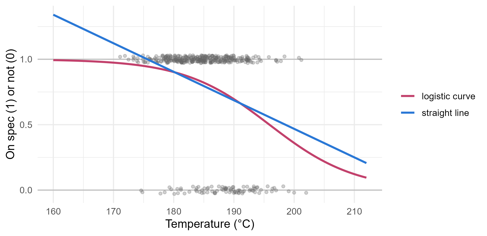

Module 2 · Lesson 15 of 15 Week 45 of 160 About 5–7 hours
Logistic regression
Modeling yes-or-no outcomes: odds, odds ratios and predicted probabilities
Model a binary outcome (is the batch on spec?) with logistic regression: work with odds and log-odds, fit and interpret the model with odds ratios, see how maximum likelihood fits it, test with deviance and likelihood-ratio tests, and turn predicted probabilities into decisions.
Every response so far has been a number: a yield, an absorbance, a rate constant. But many of the plant’s most important outcomes are yes or no. Did the batch pass the customer’s specification? Did the filter clog? Did the reactor trip? A batch is on spec or it isn’t, and what you want to know is the probability, and how the process conditions change it. That’s the job of logistic regression, the last tool of this module, and the first of a whole family of models you’ll meet again in Modules 5 and 7.
Pass or fail, yes or no, on spec or off. Today we predict chances, which is what plant managers really want to know about anyway!
In this lesson you’ll:
- see why ordinary regression is the wrong tool for a yes-or-no response
- work with probabilities, odds, log-odds and odds ratios
- fit and interpret a logistic regression with
glm() - see how maximum likelihood fits it
- test predictors with deviance and likelihood-ratio tests
- predict probabilities, and turn them into decisions with a confusion matrix
Yes-or-no outcomes
The full-scale plant’s quality records for last year cover 400 batches. For each one, they give the feed supplier and its water content, the reactor temperature, the catalyst, and whether the batch passed the customer’s specification:
production <- read_csv("data/production.csv", show_col_types = FALSE)
head(production)
#> # A tibble: 6 × 7
#> batch_id month supplier feed_water_ppm temp_C catalyst on_spec
#> <chr> <chr> <chr> <dbl> <dbl> <chr> <lgl>
#> 1 Q0001 Jan Rosewater 208 188. B TRUE
#> 2 Q0002 Jan Kestrel 328 179. B TRUE
#> 3 Q0003 Jan Fizzwell 220 193. A FALSE
#> 4 Q0004 Jan Rosewater 197 188. B FALSE
#> 5 Q0005 Jan Rosewater 203 184 A TRUE
#> 6 Q0006 Jan Kestrel 291 190. A FALSE
production |>
group_by(supplier) |>
summarise(batches = n(), on_spec_rate = mean(on_spec), water_ppm = mean(feed_water_ppm))
#> # A tibble: 4 × 4
#> supplier batches on_spec_rate water_ppm
#> <chr> <int> <dbl> <dbl>
#> 1 Fizzwell 134 0.806 196.
#> 2 Kestrel 71 0.634 292.
#> 3 Plum Valley 97 0.804 194.
#> 4 Rosewater 98 0.857 195.Overall, 78.8% of the batches were on spec, but only 63% of the batches made with Kestrel’s wet feed. The response, on_spec, is TRUE or FALSE, which R treats as 1 or 0.
Why not use ordinary regression, with 1 for on spec and 0 for not? Its fitted values would estimate the probability of being on spec, which sounds fine. But a straight line goes on forever, and probabilities stop at 0 and 1. The linear probability model below predicts a 134% chance of being on spec at 160 °C. And a yes-or-no response can’t have normal errors or a constant variance: its variance, p(1 - p), is biggest at p = 0.5 and shrinks to nothing near 0 and 1. The model needs an S-shaped curve that bends to stay between 0 and 1:
fit_lpm <- lm(as.numeric(on_spec) ~ temp_C, data = production)
fit_1 <- glm(on_spec ~ temp_C, family = binomial, data = production)
curves <- tibble(temp_C = seq(160, 212, by = 0.5)) |>
mutate(`straight line` = predict(fit_lpm, pick(temp_C)),
`logistic curve` = predict(fit_1, pick(temp_C), type = "response")) |>
tidyr::pivot_longer(-temp_C, names_to = "model", values_to = "p")
ggplot(production, aes(x = temp_C, y = as.numeric(on_spec))) +
geom_hline(yintercept = c(0, 1), color = "grey75") +
geom_point(position = position_jitter(width = 0, height = 0.03, seed = 1), alpha = 0.3, size = 1.2, color = "grey40") +
geom_line(data = curves, aes(y = p, color = model), linewidth = 1) +
scale_color_manual(values = c("straight line" = "#2a78d6", "logistic curve" = "#C2416C")) +
labs(x = "Temperature (°C)", y = "On spec (1) or not (0)", color = NULL) +
theme_minimal(base_size = 12)
Each grey point is a batch, at 1 if it was on spec and 0 if not (jittered a little so they don’t sit on top of one another). Hotter batches fail more often, and the rose curve follows that, staying inside the 0-to-1 range at every temperature.
Probabilities, odds and log-odds
Logistic regression works on the scale of odds. If the probability of being on spec is p, the odds are
\text{odds} = \frac{p}{1 - p} .
A probability of 0.8 is odds of 4 (four on spec for every one off). Probability 0.5 is odds of 1, “evens”. Odds run from 0 to infinity. Take their logarithm, and you get the log-odds, or logit, which runs over the whole number line, from minus to plus infinity:
\text{logit}(p) = \ln\frac{p}{1 - p} .
That’s what makes it the natural scale for a linear model: a line in x can go anywhere, and so can the logit. Logistic regression says that the log-odds are linear in the predictors:
\ln\frac{p}{1 - p} = \beta_0 + \beta_1 x_1 + \dots + \beta_k x_k \qquad\Longleftrightarrow\qquad p = \frac{1}{1 + e^{-(\beta_0 + \beta_1 x_1 + \dots + \beta_k x_k)}} .
The second form, the logistic function (plogis() in R), is the S-curve. Its inverse, qlogis(), turns a probability into log-odds.
To compare two groups, use the odds ratio: the odds in one group divided by the odds in the other. An odds ratio of 1 means no difference, and below 1 means lower odds.
Your turn. Compute the odds of being on spec for Kestrel’s batches and for everyone else’s, and their odds ratio.
Divide by the other suppliers’ odds: odds(p_others).
p_kestrel <- mean(production$on_spec[production$supplier == "Kestrel"])
p_others <- mean(production$on_spec[production$supplier != "Kestrel"])
odds <- function(p) p / (1 - p)
odds(p_kestrel) / odds(p_others)0.38. Kestrel’s batches had odds of 1.7 (63% on spec), against 4.6 for the others (82%), so their odds of passing were only 38% as high.
The logistic regression model
glm() fits generalized linear models, which include logistic regression. family = binomial says the response is yes or no, and the logit is its default link:
fit_1 <- glm(on_spec ~ temp_C, family = binomial, data = production)
summary(fit_1)$coefficients
#> Estimate Std. Error z value Pr(>|z|)
#> (Intercept) 27.4148071 4.59829903 5.961945 2.492527e-09
#> temp_C -0.1399452 0.02451027 -5.709653 1.132066e-08The slope is −0.140 per °C, on the log-odds scale: each extra degree lowers the log-odds of being on spec by 0.140. Log-odds are hard to feel, so exponentiate: e^{-0.140} = 0.87, an odds ratio of 0.87 per degree. Each degree multiplies the odds of passing by 0.87, a 13% drop. Over 10 degrees, the odds ratio is e^{-1.40} = 0.25: a batch at 195 °C has a quarter of the odds of passing that a batch at 185 °C has.
On the probability scale, the effect isn’t constant, because the curve is S-shaped. The fitted probability of passing is 95% at 175 °C, 82% at 185 °C, and only 53% at 195 °C. The same 10 degrees cost 13 points of probability in the first step and 29 in the second. That’s why logistic coefficients are reported as odds ratios, which are constant.
The z value column tests each coefficient with a Wald test: the estimate divided by its standard error, compared with a normal distribution. It’s the logistic counterpart of the t-test.
Your turn. Compute the odds ratio for 10 degrees from fit_1.
For a 10-degree change, multiply the slope by 10 before exponentiating.
fit_1 <- glm(on_spec ~ temp_C, family = binomial, data = production)
b <- coef(fit_1)["temp_C"]
unname(exp(10 * b))0.25: ten degrees hotter cuts the odds of passing to a quarter. (Note that it’s e^{10b}, not 10 \times e^{b}: odds ratios multiply.)
Several predictors and odds ratios
Add the water content and the catalyst, exactly as in lm():
fit <- glm(on_spec ~ temp_C + feed_water_ppm + catalyst, family = binomial, data = production)
summary(fit)$coefficients
#> Estimate Std. Error z value Pr(>|z|)
#> (Intercept) 31.88574980 4.977259687 6.406286 1.491070e-10
#> temp_C -0.15110092 0.025845675 -5.846275 5.027034e-09
#> feed_water_ppm -0.01264207 0.002895932 -4.365456 1.268577e-05
#> catalystB 0.79097973 0.272872986 2.898710 3.747009e-03
exp(cbind(odds_ratio = coef(fit), confint(fit)))
#> Waiting for profiling to be done...
#> odds_ratio 2.5 % 97.5 %
#> (Intercept) 7.043770e+13 5.731334e+09 1.801854e+18
#> temp_C 8.597609e-01 8.157588e-01 9.030065e-01
#> feed_water_ppm 9.874375e-01 9.817647e-01 9.930117e-01
#> catalystB 2.205556e+00 1.299947e+00 3.800169e+00Each coefficient is now a partial effect on the log-odds, with the other predictors held fixed, just as in Lesson 5. In odds ratios, with 95% confidence intervals:
| Change | Odds ratio | 95% interval |
|---|---|---|
| 10 °C hotter | 0.22 | 0.13 to 0.36 |
| 100 ppm more water | 0.28 | 0.16 to 0.50 |
| catalyst B instead of A | 2.21 | 1.30 to 3.80 |
So catalyst B more than doubles the odds of passing, at the same temperature and water content, and 100 ppm of extra water cuts them to about a quarter. confint() on a glm computes profile-likelihood intervals, which are more accurate than “estimate ± 2 SE” for logistic models. Exponentiate both ends to get the interval for the odds ratio. (The intercept’s “odds ratio” is the odds at 0 °C and 0 ppm, a meaningless extrapolation, so ignore it.)
Your turn. What’s the odds ratio for 100 ppm more water, in the full model?
For 100 ppm, exponentiate 100 * b_water.
b_water <- coef(fit)["feed_water_ppm"]
unname(exp(100 * b_water))0.28: at the same temperature and with the same catalyst, a feed with 100 ppm more water has about 28% of the odds of producing an on-spec batch. Kestrel’s lots average about 95 ppm more water than the others’, which explains their poor record.
How the model is fitted: maximum likelihood
Least squares makes no sense for 0s and 1s, so logistic regression uses maximum likelihood: choose the coefficients that make the observed outcomes as probable as possible. For a set of coefficients, each batch gets a predicted probability \hat{p}_i. If the batch was on spec, the model gave that outcome probability \hat{p}_i; if it wasn’t, 1 - \hat{p}_i. Since the batches are independent, the probability of the whole dataset is the product, and its logarithm is the log-likelihood:
\ell = \sum_{i=1}^{n} \Big[ y_i \ln \hat{p}_i + (1 - y_i) \ln(1 - \hat{p}_i) \Big] .
Maximum likelihood finds the coefficients with the largest \ell. There’s no formula like the normal equations, so glm() climbs to the top iteratively: the “Number of Fisher Scoring iterations” in its summary says how many steps it took (5 here).
NoteGo deeper: Newton’s method in disguise
Fisher scoring is Newton’s method for finding where the gradient of \ell is zero. For logistic regression, the gradient is X^\top(\mathbf{y} - \hat{\mathbf{p}}) and the matrix of second derivatives is -X^\top W X, with W diagonal with entries \hat{p}_i(1 - \hat{p}_i). So each step is
\mathbf{b}_{\text{new}} = \mathbf{b} + (X^\top W X)^{-1} X^\top (\mathbf{y} - \hat{\mathbf{p}}),
which turns out to be a weighted least squares fit (Lesson 9) to a “working response”. That’s why it’s also called iteratively reweighted least squares (IRLS). At the maximum, X^\top(\mathbf{y} - \hat{\mathbf{p}}) = \mathbf{0}: the logistic version of Lesson 4’s X^\top\mathbf{e} = \mathbf{0}, and it means that the fitted probabilities add up to the number of on-spec batches.
The standard errors come from the curvature at the top, (X^\top W X)^{-1}: a sharply peaked likelihood means precise estimates. Maximum likelihood is the workhorse of modern statistics, and Module 5 shows how Bayesian methods build on the same likelihood.
Your turn. Compute the log-likelihood of fit by hand from its fitted probabilities, and compare it with logLik(fit).
An off-spec batch contributes the log of its probability of being off spec, 1 - p_hat.
p_hat <- fitted(fit)
y <- as.numeric(production$on_spec)
sum(y * log(p_hat) + (1 - y) * log(1 - p_hat))−174.1, the same as logLik(fit). Any other set of coefficients would give a lower (more negative) number.
Testing with deviance
In linear regression, tests compare sums of squares. In logistic regression, they compare deviances. For yes-or-no data, a model’s deviance is simply -2\ell, minus twice its log-likelihood: the smaller it is, the better the model fits. summary() reports two:
- the null deviance, 413.8, for a model with only an intercept (the same probability for every batch);
- the residual deviance, 348.2, for the fitted model.
To compare nested models, use the likelihood-ratio test: the drop in deviance between them. If the extra coefficients are really zero, the drop follows a chi-square distribution, with degrees of freedom equal to the number of extra coefficients. Here, the three predictors together cut the deviance by 65.6 on 3 degrees of freedom, p = 4 \times 10^{-14}.
anova(reduced, full, test = "Chisq") runs the test, and drop1(fit, test = "LRT") tests each term in turn, like the partial F-tests of Lesson 6. The likelihood-ratio test and the Wald z-test usually agree, but when they don’t, trust the likelihood-ratio test: it’s more reliable in small samples and for large effects.
Your turn. Does the catalyst matter, once temperature and water are accounted for? Run the likelihood-ratio test.
The likelihood-ratio test is test = "Chisq".
without <- glm(on_spec ~ temp_C + feed_water_ppm, family = binomial, data = production)
anova(without, fit, test = "Chisq")The catalyst cuts the deviance by 8.7 on 1 degree of freedom, p = 0.003. The Wald test in summary() gave p = 0.004: close, as they usually are.
Predicted probabilities
predict() on a glm works on the log-odds scale by default. Add type = "response" to get probabilities:
new <- tibble(temp_C = c(180, 190), feed_water_ppm = c(200, 300), catalyst = c("B", "A"))
predict(fit, newdata = new, type = "response")
#> 1 2
#> 0.9502706 0.3506816A catalyst B batch at 180 °C with dry feed has a 95% chance of passing. A catalyst A batch at 190 °C with Kestrel-wet feed has 35%.
For a confidence interval around a predicted probability, build it on the log-odds scale, where the estimate is roughly normal, then transform both ends with plogis(). That keeps the interval inside 0 to 1:
lp <- predict(fit, newdata = tibble(temp_C = 190, feed_water_ppm = 300, catalyst = "B"), se.fit = TRUE)
plogis(lp$fit + c(-1.96, 1.96) * lp$se.fit)
#> [1] 0.3947763 0.6850654Your turn. A wet lot (300 ppm) is going to be run at 190 °C. How much does switching from catalyst A to B raise its chance of passing?
For probabilities, use type = "response".
runs <- tibble(temp_C = 190, feed_water_ppm = 300, catalyst = c("A", "B"))
predict(fit, newdata = runs, type = "response")From 35% to 54%. Better, but still close to a coin toss: for a lot this wet, running cooler would help more, as the challenge will show.
From probabilities to decisions
Suppose the plant wants to flag batches that are likely to fail, so that it can test them more carefully, or adjust them before they’re finished. A simple rule: flag a batch if its predicted probability of passing is below some threshold. Comparing the flags with what really happened gives a confusion matrix. With a threshold of 0.5:
flagged <- fitted(fit) < 0.5
table(flagged, off_spec = !production$on_spec)
#> off_spec
#> flagged FALSE TRUE
#> FALSE 302 67
#> TRUE 13 18The rule is right about 80% of the batches. That sounds good, until you notice that “never flag anything” is right about 78.8% of them, because most batches pass anyway. Accuracy is a poor guide when one outcome is rare. What matters is the two kinds of error:
- Missed failures: of the 85 batches that really failed, the rule flagged only 18. Its sensitivity, the fraction of failures caught, is 21%.
- False alarms: it flagged 13 batches that passed. Its specificity, the fraction of passing batches left alone, is 96%.
Moving the threshold trades one error for the other. Flag every batch below 0.7, and it catches 48 of the 85 failures, at the price of 46 false alarms. Flag below 0.8, and it catches 59, with 104 false alarms. The right threshold depends on the costs: if a failed batch that reaches the customer costs much more than an extra lab test, flag generously. Plotting the sensitivity against the false-alarm rate for every threshold gives the ROC curve, and the area under it (0.77 here) measures how well the model separates the passes from the failures, whatever the threshold. You’ll use these tools a lot in Module 7.
Your turn. With a threshold of 0.7, how many of the failed batches are caught?
The new threshold is 0.7.
flagged <- fitted(fit) < 0.7
off_spec <- !production$on_spec
sum(flagged & off_spec)48 of the 85 failures (56%), with sum(flagged & !off_spec) = 46 false alarms. Whether that’s a good trade is a question for the plant’s accountants as much as its statisticians.
Challenge round
Challenge 1 · A safe operating temperature. The customer wants at least a 90% chance that each batch passes. With catalyst B and normal feed (200 ppm of water), what’s the highest temperature that still gives 90%? Solve the model’s equation for the temperature: set the log-odds equal to qlogis(0.9).
Catalyst B adds its coefficient, "catalystB", to the log-odds.
b <- coef(fit)
target <- qlogis(0.9)
unname((target - b["(Intercept)"] - b["feed_water_ppm"] * 200 - b["catalystB"]) / b["temp_C"])185.0 °C. With Kestrel-wet feed at 300 ppm, the same calculation gives 176.6 °C: the wet lots need to run about 8 degrees cooler for the same chance of passing. Of course, cooler runs make less yield (Lesson 9), so the plant faces a trade-off that combines both models.
Challenge 2 · Is it the supplier or the water? Kestrel’s batches fail more because their feed is wetter. Or is there something else wrong with Kestrel’s feed? Add the supplier to the model, which already has the water, and test it with a likelihood-ratio test.
Add supplier.
with_supplier <- glm(on_spec ~ temp_C + feed_water_ppm + catalyst + supplier, family = binomial, data = production)
anova(fit, with_supplier, test = "Chisq")A drop in deviance of only 2.4 on 3 degrees of freedom, p = 0.50. Once the water content is known, the supplier tells you nothing more. That’s good news for purchasing: the problem is the water, which can be specified in a contract, measured on delivery, or dried out, rather than something mysterious about Kestrel.
Quick quiz
1. Why is ordinary linear regression a poor choice for a yes-or-no response?
A straight line ignores the limits of a probability, and the variance p(1 - p) changes with p.
2. A batch has a 0.75 probability of passing. What are its odds?
0.75/0.25 = 3: three passes for every failure.
3. A logistic coefficient for temperature is −0.15 per °C. What does e^{-0.15} = 0.86 mean?
Exponentiated logistic coefficients are odds ratios. The change in probability depends on where you are on the S-curve.
4. How are the coefficients of a logistic regression estimated?
There’s no formula, so glm() maximizes the log-likelihood iteratively (Fisher scoring, or IRLS).
5. How do you test whether a predictor matters in a logistic regression?
Deviance plays the role of the residual sum of squares. anova(reduced, full, test = "Chisq") and drop1(fit, test = "LRT") do the tests.
6. A model flags batches likely to fail, with 80% accuracy, but 79% of batches pass anyway. What should you look at?
When one outcome is common, accuracy hides the errors that matter. A rule that never flags anything would be 79% accurate.
Wrap-up
You’ve modeled your first yes-or-no outcome, and finished Module 2! Here’s what you’ve learned:
- Yes-or-no responses need a model that keeps probabilities between 0 and 1. Linear regression doesn’t.
- Odds are p/(1 - p), and log-odds (the logit) run over the whole number line. Logistic regression makes the log-odds linear in the predictors: \text{logit}(p) = \beta_0 + \beta_1 x_1 + \dots
glm(y ~ ..., family = binomial)fits it. Exponentiated coefficients are odds ratios: 10 °C hotter cut the odds of passing to 0.22, 100 ppm more water to 0.28, and catalyst B multiplied them by 2.2.- Maximum likelihood fits the model, iteratively. The deviance, -2\ell, measures lack of fit, and likelihood-ratio tests compare nested models with chi-square tests.
- Predicted probabilities come from
predict(..., type = "response"). Build their confidence intervals on the log-odds scale. - Decisions: a threshold turns probabilities into flags. Judge it by its sensitivity and false alarms, not by its accuracy, and choose it from the costs.
TipPractice in RStudio (optional, about an hour)
Download production.csv into your project’s data-raw/ folder.
- The S-curves. Plot the fitted probability of passing against the temperature, with one curve for each catalyst, at 200 ppm of water. Then add curves for 300 ppm. Where do the curves for catalyst B at 300 ppm and catalyst A at 200 ppm cross?
- An interaction. Does the catalyst’s effect depend on the water? Add
feed_water_ppm:catalystto the model and test it with a likelihood-ratio test. - The ROC curve. Install the pROC package, and run
plot(pROC::roc(production$on_spec, fitted(fit)))andpROC::auc(...). Then do it without the package: for thresholds from 0 to 1, compute the sensitivity and the false-alarm rate, and plot one against the other. - Checking the calibration. Group the batches into ten groups by their fitted probability (
dplyr::ntile(fitted(fit), 10)), and compare each group’s average fitted probability with its actual on-spec rate. Do the model’s probabilities mean what they say? (This is the idea behind the Hosmer-Lemeshow test.)
NoteKey words from this lesson
- Odds
- p/(1 - p), the probability of an event divided by the probability that it doesn’t happen.
- Log-odds (logit)
- \ln\left(p/(1 - p)\right), which runs from minus to plus infinity.
- Logistic regression
- A model in which the log-odds of a yes-or-no outcome are a linear function of the predictors.
- Odds ratio
- The odds in one situation divided by the odds in another. In logistic regression, e^{b} is the odds ratio for a one-unit increase in the predictor.
- Maximum likelihood
- Estimating coefficients by choosing the values that make the observed data most probable.
- Deviance
- For a yes-or-no response, -2 times the log-likelihood. Smaller means a better fit.
- Likelihood-ratio test
- A test of nested models that compares their deviances with a chi-square distribution.
- Confusion matrix
- A table of predicted against actual outcomes, used to count correct decisions and the two kinds of error.
- Sensitivity and specificity
- The fraction of real events that a rule detects, and the fraction of non-events that it correctly leaves alone.
NoteWant to read more?
- Paul Roback and Julie Legler, Beyond Multiple Linear Regression, chapters 2, 5 and 6. Likelihoods, generalized linear models and logistic regression, with clear case studies.
- Penn State STAT 501, Lesson 13: Weighted Least Squares & Logistic Regressions, section 13.2. Logistic regression, odds ratios and deviance tests.
- Introduction to Modern Statistics, “Logistic regression”. A gentle introduction with many pictures.